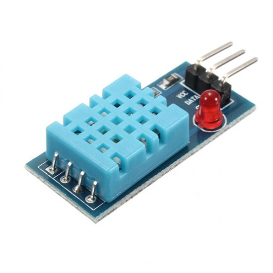
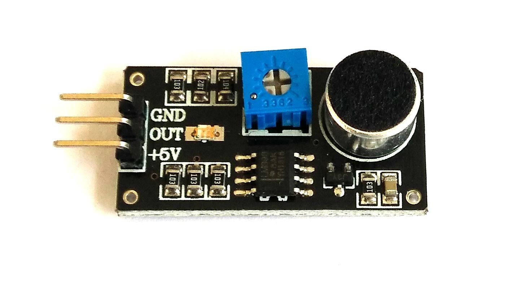

types of sensors
1. ultrasonic sensor
An ultrasonic sensor is an electronic device that measures the distance of a target object by emitting ultrasonic sound waves, and converts the reflected sound into an electrical signal

applications of ultrasonic sensors
- People Detection
- Bottle Counting on Drink Filling Machines
- Anti-Collision Detection
- Uses in Production Lines
for more imformation clich here
Advantages of Ultrasonic Sensors
- Their small size makes it easy to integrate into projects
- Ultrasonics can easily integrate with any type of controller
- Their high frequency, sensitivity, and power make it easy to detect objects
- They have greater accuracy than many other methods at measuring thickness and depth of a parallel surface
- Ultrasonics are easy to use and not dangerous during operation
2. humidity sensor
A humidity sensor is a device that detects and measures water vapor.
Applications of Humidity Sensor
- measuring humidity in printers
- fax machines
- weather stations
- food processing
- refrigerators
how to use it real life example
Domestic: Controlling and sensing humidity in our offices and homes is important as higher humidity may affect the blood flow. Other areas include indoor plantation, cooking, etc.
Industrial: In industries like chemical, refineries, metal, or others where furnaces are used need humidity sensors as high humidity reduces the amount of oxygen present in the air. Other industries like paper, textile, food processing, etc. also need control of humidity.
Agriculture: Drip irrigation is an irrigation technique that needs precise moisture content for plants. In the growth of the plant, the moisture present in the soil also plays an important role. Moreover, indoor vegetation also requires humidity sensors.
Electronics & Semiconductor: A number of electronic devices are graded with a range of humidity values. Generally, this value is between 10 to 50% humidity. Also, the semiconductor fabrication plants need to maintain very accurate humidity and temperature values as even a difference of a minute can hugely impact the production.
Medical: The medical equipment like sterilizers, incubators, ventilators, etc. need humidity control. The humidity sensor is also used in biological processes and pharmaceutical plants.
3.soil moisture sensor
Soil moisture sensors typically refer to sensors that estimate volumetric water content..

Applications of soil moisture sensor
- irrigation scheduling
- water balance studies
- greenhouse management
- soil health monitoring
- fertigation management
4.sound sensor
A sound sensor is defined as a module that detects sound waves through its intensity and converting it to electrical signals
Applications of sound sensor
- Consumer electronics such as phones, computers, music systems
- Security and Monitoring systems such as burglar alarms, door alarm
- Home automation such as lighting your house by detecting whistle/clap instead of physically turning the light switch.
- Robotics ·